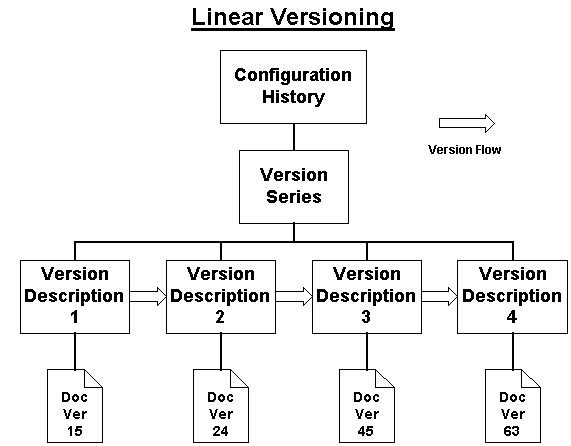
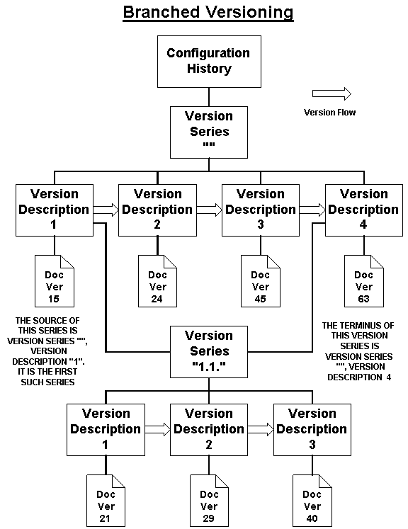
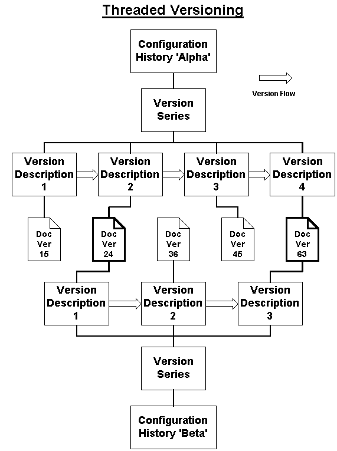

DMA Versioning Model
The DMA Versioning Model provides fundamental document-management operations. A document can be taken through a progression of successive versions, and the relationship among those versions can be tracked using DMA. Documents managed under the DMA versioning model can be updated and revised using standard check-in and checkout operations of the model.
The model in DMA 1.0 supports what is known as linear versioning. The different versions of a document are maintained as a series of individual document version objects. In this sequence, there is one instance that is designated as the current version. The model is organized in a way that allows extension to configuration management of document organizations (including branched versioning). However, the operations necessary to support other than linear series of versions are not specified for DMA 1.0.
The basic DMA 1.0 model for versioning presumes that there is some conceptual entity represented as a sequence of progressive versions. These versions may be defined in any number of ways, yet they each present a state of the conceptual entity at some point. There is at most one current version, which represents the current state of the conceptual entity. In this view, the versions constitute a possibly incomplete history of states of the conceptual entity.
In the DMA 1.0 specification, only Document Version objects are defined as well-known versionable objects, but the concepts can be generalized to allow versioning of additional well-known objects in the future. (The addition of application-specific versionable objects via sub-classing is available immediately.)
The DMA 1.0 specification does not require the Document Spaces to support versioning. The specification merely specifies how versioning is expressed for those Document Spaces which do support versioning. Additionally, the well-known objects used in DMA 1.0 solely to express versioning need not be supported by Document Spaces which do not support versioning.
The informal view of the DMA Version Model is illustrated in the diagram below. The different versions of a document can be thought of as states that once existed in the history of a conceptual entity. In the DMA 1.0 Version Model, the conceptual structure is represented by a configuration history that holds together the arrangement of the version states of the document. The Configuration History locates the Primary Version Series and the individual versionable objects are strung onto the series much like beads on a string. The connector between a place in a version series and a versionable object provides a Version Description for that particular occurrence of the versionable object.
Figure -1DMA Model of Versioned Objects (conceptual)
The DMA model allows the possibility that a versionable object might exist as a constituent of more than one Configuration History, or that it might occur in the same Configuration History in more than one way.
Because a versionable object may potentially occur in configurations in more than one way, the data that is specific to each occurrence is kept separate from the versionable object in a Version Description object. The Version Description object bridges a versionable object to a particular place in a configuration of versions and provides properties that are specific to that occurrence.
If a document space supports the DMA versioning model, it will support (subclasses of) the following objects:
The objects listed above are used, in addition to the individual versionable objects themselves, to manage the organization of conceptual-entity version series and the check-in and the check-out process for versions of conceptual entities.
If the DMA Versioning Model is not supported by a particular document space as a matter of policy or implementation, then objects of these kinds will not be accepted in that space, and class descriptions for the objects will not appear.

Figure -2 DMA Version Management Navigation Model
In the DMA 1.0 version management navigation model, there are four levels to a (conceptual) versioned object:
The objects that support versioning are shown in the following table:
|
Feature |
Object(s) |
|
Linear Versioning |
Version Series, Version Description, and Reservation |
|
Branch Versioning |
Configuration History, Version Series, Version Description, and Reservation |
|
Threaded Versioning |
Version Description, and Reservation |
The following diagram shows the inheritance of the classes used for versioning in this proposal. (The versioning classes are outlined in bold lines.)

Figure -3 DMA Version Management Inheritance Diagram
Three types of versioning are mentioned in this proposal: Linear Versioning, Branched Versioning, and Threaded Versioning. The versioning types are described and discussed in the following sections.
Linear versioning includes configurations in which successive versions are organized in a sequence or series. There is one member of the series, usually the latest one, which is recognized as the Current Version of the series.
Version Series objects implement linear series of versioning. Each Version Series can be viewed as the recorder for the series and its state.
Version Series do not mention the versionable objects directly; instead, a Version Series records a sequence of Version Description objects. Each Version Description links to a single versionable object. The Version Description provides a unique connection between a Version Series and a versionable object.
The Version Descriptions attached to a version series provide any descriptive application information about how the versionable object comes to be incorporated in the version series in that place. The Version Description is valuable for carrying descriptive information about how the object occurs in the particular Version Series. For example, the Version Description subclass used will usually provide a label (e.g., "5" or "2" or "C" or "draft 5" or "final") by which the object is known relative to the containing series. In addition, there may be information about the authority under which the Version Description was added and when it was done.
The Version Description is valuable as a separate object, whether or not a versionable object can be attached to more than one Version Description (see "Threaded Versioning," below). The Version Description can be subclassed independent of versionable objects to add more version-related application information without forcing more subclassing on the versionable objects themselves.
In addition, DMA 1.0 defines classes of objects, such as the DMA Document Version, that are designated as versionable. Versionable objects carry certain version-management properties that are required for the object to be managed as a state of a versioned object. Versionable objects also offer the IdmaVersionable interface. In a Document Space that does not support versioning, these properties take on specific default values and the IdmaVersionable interface need not be offered.
In the DMA 1.0 Versioning model, versionable objects are not required to be versioned. In the model, it is permissible for versionable objects to exist as standalone objects not reachable by any Version Description. (Applications and document space policy mechanisms can restrict the model as appropriate.)

Branch Versioning and Complex Configurations
Branch Versioning is an extension beyond the basic linear versioning of DMA 1.0 in which a conceptual entity's history of configurations requires multiple Version Series intertwined in a variety of ways. Operations for creating branches of versions and more-complex configurations are not provided in the DMA 1.0 Versioning specification, but the impact on navigation is defined.
The DMA 1.0 Versioning model anticipates complex configurations by assuming that a Configuration History object might list the presence of more than one Version Series.
In addition, the DMA Version Description provides for one or more branches being taken from that point in a series. The DMA Version Description also provides for one or more Version Series merging into the current series at the Version Description point. These are the only ways that complex configurations are defined to be apparent to DMA 1.0 applications.
To permit scaling from linear versioning to more complex versioning and configuration-management models beyond DMA 1.0, Configuration History is always used, even for linear versioning configurations having a single Version Series. In this arrangement, linear versioning occurs as simply a restricted case of a more complex configuration.

The DMA 1.0 Versioning model explicitly allows for a versionable object to exist as a version of one or more conceptual entities and in one or more ways. There is no model-inherent limitation on how many version descriptions may lead to the same versionable object. Stated another way, the versionable object may be threaded through more than once by the same or different Version Series.
DMA retains this provision to allow configurations of objects for different purposes. For example, there might be a special version series of only official releases of a publication, and other version series might include intermediate internal revisions and proposals. Similarly, some version descriptions might relate to stages of a workflow that a versionable object is taken through, yet the various reviews, approvals, and transmittals might all refer to the same versionable object.
Whether threaded versioning is permitted in general or on a case-by-case basis will depend on policies honored by document spaces and availability of applications that operate successfully within those policy constraints.

Basic Characteristics of DMA Versioning
The DMA Versioning model is based on the idea that the configurations of material are being managed without regard to variation among the different versions. The DMA 1.0 Versioning model specification does not specify any intrinsic relationship between versionable objects that are attached to version descriptions.
The basic check-in model simply adds versionable objects to a version series. There is no indication about how that versionable object is related to any others in the series nor what the implications might be of the versionable object also being included (via version description) into multiple version series.
Similarly, the available "check-out" operation is the reservation of the right to check in the next new member of a series. There is no requirement that the new member have any particular relationship to others of the series.
Any relationship between the derivation of an object and its occurrence in a particular version series is a function of applications and possibly some constraints implemented by policy mechanisms of document spaces.
Applications may operate quite differently. Some application may impose strict relationships between versionable objects and how new ones are derived for check-in into version series. Such applications can honor those policies by using the DMA 1.0 versioning operations as building blocks of the more-specific form of document versioning that is delivered to users of a DMA system.
In DMA 1.0, the following versioning operations are supported:
Note: These versioning operation names listed above are not the exact method names, and the operations described are performed in two steps as dictated by the persistence model of DMA.